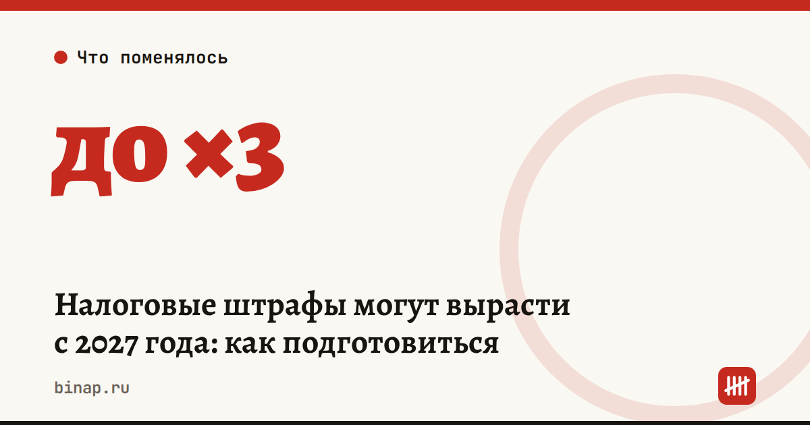

Налоговые штрафы могут вырасти с 2027 года: как подготовиться

В Госдуме законопроект № 617-9 — большой пакет поправок в Налоговый кодекс к бюджету на 2027–2029 годы. В нём предлагают проиндексировать налоговые штрафы на накопленную инфляцию. Закон ещё не принят, суммы могут измениться.
Коротко
- Проект № 617-9 предлагает проиндексировать фиксированные налоговые штрафы с 2027 года.
- Минимальный штраф за несданную декларацию — 2 600 ₽ вместо 1 000 ₽ (по обзору КонсультантПлюс).
- За каждый документ, не представленный по требованию, — 560 ₽ вместо 200 ₽ (по данным Клерка).
- Больше всего рискуют те, кто не отвечает на требования: штраф считается за каждый документ.
- Штраф можно снизить, если есть смягчающие обстоятельства.
Сроки, изменения и разборы для ИП и самозанятых — каждое утро в Telegram и MAX. Подпишитесь, чтобы не пропустить.
Что известно из текста проекта (по обзору КонсультантПлюс): - минимальный штраф за несданную декларацию вырастет с 1 000 до 2 600 ₽; - появится штраф 121 тыс. ₽ за то, что компания не сообщила о создании обособленного подразделения (кроме филиалов и представительств); - остальные фиксированные штрафы НК проиндексируют.
Что пишет Клерк (эти цифры мы не нашли в открытых обзорах проекта): - штрафы вырастут в 1,16–3 раза с 2027 года; - за каждый документ, не представленный по требованию ФНС, — 560 ₽; при запросе на сотни документов набегают сотни тысяч рублей; - за грубое нарушение правил учёта — до 111 тыс. ₽.
Почему это важно маленькому бизнесу. Штрафы за документы считаются поштучно. Требование на 100 счетов-фактур при 560 ₽ за штуку — это 56 000 ₽ (расчёт редакции), даже если налог вы заплатили правильно.
Что сделать сейчас: 1. Отвечайте на каждое требование ФНС письменно и в срок, даже если документа нет — так и напишите. 2. Ведите реестр: что и когда отправили в налоговую. Штраф за документ, которого у вас никогда не было, можно оспорить. 3. Поставьте в календарь все сроки сдачи отчётности на 2027 год: самый частый штраф — за опоздание с декларацией. Готовый список — в налоговом календаре ИП на 2027 год. 4. Если штраф уже назначили — подайте ходатайство о смягчающих обстоятельствах с документами или обжалуйте решение: как обжаловать решение налоговой.
Сколько может стоить молчание
| Сколько документов запросили | Штраф при 200 ₽ (сейчас) | Штраф при 560 ₽ (по проекту) |
|---|---|---|
| 10 | 2 000 ₽ | 5 600 ₽ |
| 100 | 20 000 ₽ | 56 000 ₽ |
| 300 | 60 000 ₽ | 168 000 ₽ |
Расчёт редакции: число документов × штраф за документ. Ставка 560 ₽ — по данным Клерка, это пока проект.
Частые вопросы
Когда вырастут штрафы? Не раньше, чем Госдума примет закон и он вступит в силу. По данным Клерка, речь о 2027 годе.
Можно ли снизить штраф? Да. Если есть хотя бы одно смягчающее обстоятельство, штраф уменьшают в 2–10 раз (п. 3 ст. 114 НК, перечень обстоятельств — в ст. 112).
Что ещё есть в том же законопроекте? По данным Клерка, налоговая сможет приостанавливать карточки продавцов на маркетплейсах за неявку на допрос или непредставленные документы — см. проверки продавцов маркетплейсами.
Если декларация нулевая, штраф за опоздание будет? Нет: с 26 июня 2026 года штраф по ст. 119 НК за просроченную нулевую декларацию отменён, но счёт заблокировать могут — подробно в статье штрафа за нулевую декларацию нет.